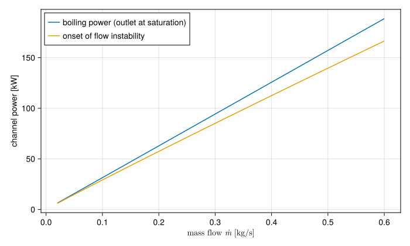

Thermal-hydraulic limits
Research reactor cores, with plate or rod fuel and light or heavy water, are cooled by water well below its boiling point, usually at low pressure: a few bar, set by the pool or tank above the core. The safety case rests on showing that, in every condition considered, the water keeps carrying the heat away from the fuel. The ways that stops happening are called thermal-hydraulic limits, and STREAM checks them after a solve, in Thresholds.
This page explains how the limits relate to each other. Each limit then has its own page: Onset of nucleate boiling, Onset of significant void, Onset of flow instability, Critical heat flux and Wall temperature limit. Margins explains how they are turned into numbers to compare against acceptance criteria.
What happens as a heated channel runs hotter
Take one coolant channel at steady state, with a fixed flow $\dot m$ and inlet temperature $T_\text{in}$, and raise the heat flux $q''$ from its walls. With nothing changing in time, the coolant stores no heat, and the bulk temperature rises along the channel by the energy balance
\[T_b(z) = T_\text{in} + \frac{P_h}{\dot m\, c_p}\int_0^z q''(z')\,dz',\]
where $P_h$ is the heated perimeter. The wall runs hotter than the bulk by the convective film drop $q''/h$. In subcooled flow at low pressure, the usual sequence is:
- Onset of nucleate boiling (ONB). The wall gets hot enough for bubbles to grow at cavities on its surface, although the bulk is still subcooled. The bubbles collapse in the cold core of the flow. Heat transfer improves, and nothing is lost yet.
- Onset of significant void (OSV). Further downstream the bulk is close enough to saturation that bubbles leave the wall and survive in the flow. The void fraction, so far negligible, starts to rise steeply.
- Onset of flow instability (OFI). Vapour in the channel raises its pressure drop, and beyond a point the pressure drop rises as the flow falls. A channel in parallel with many others, all sharing one plenum-to-plenum pressure difference, can then lose its flow to its neighbours in a sudden excursion.
- Critical heat flux (CHF). The liquid can no longer wet the wall. A vapour film forms, the heat transfer coefficient collapses, and the wall temperature jumps by hundreds of kelvin. In aluminium-clad fuel this means melting or blistering.
This order is common, not guaranteed. Which limit is reached first depends on the pressure, the flow, the inlet subcooling, the channel geometry and how the channel is fed:
- At very low or reversed flow, as in natural circulation or the flow reversal of a loss of flow, CHF falls to the low values set by how much liquid can reach the wall against the rising vapour, and it can come before OFI.
- A channel with a steep supply curve, such as a single loop driven by its own pump, does not run away at the minimum of its pressure drop curve, so OFI is no limit for it.
- Near saturation the stages close up, and ONB and OSV can sit at the same place.
- In a fast transient the channel is not at steady state. The wall heat flux can outrun the bulk temperature, and the correlations, all fitted to steady experiments, are being used outside the conditions they were measured in.
ONB and OSV are not damage in themselves. They mark where the single-phase model STREAM solves stops being accurate, and they warn of what follows. OFI and CHF are the limits that matter for the fuel.
Why flow instability often comes first at low pressure
At the 70 to 150 bar of a power reactor, CHF is the design limit. At the few bar of most research reactors it is often OFI. The vapour that forms at 1 to 2 bar is far less dense than the liquid ($\rho_l/\rho_v \approx 1600$ at 1 bar, against about 20 at 70 bar), so a small amount of boiling swells the flow volume and the pressure drop sharply, all the more in the narrow gaps of plate fuel. The channel's pressure-drop-versus-flow curve then develops a minimum, and the region to the left of it, where the curve falls as the flow increases, is the Ledinegg instability (Ledinegg, 1938):
\[\left.\frac{\partial\,\Delta p_\text{channel}}{\partial \dot m}\right|_{q''} < \frac{\partial\,\Delta p_\text{supply}}{\partial \dot m}.\]
A channel fed by a fixed pressure difference, as one channel among many in parallel is, has a flat supply curve: $\partial\Delta p_\text{supply}/\partial\dot m \approx 0$. So it becomes unstable as soon as its own curve turns down. The flow then drops to a much lower value on the other branch of the curve, and CHF follows at a heat flux far below the one the original flow could have carried. That is why research reactor safety analyses commonly take OFI as the limit at forced flow, with CHF as a second, independent check (International Atomic Energy Agency, 1980).
What STREAM computes, and what it does not
STREAM solves single-phase flow. Its channels have no void fraction and no two-phase pressure drop, so it cannot follow a channel through the excursion itself or predict the post-CHF wall temperature. What it does is compute the single-phase state accurately, then ask each correlation how far that state is from the limit. This is the standard approach for research reactor analysis, and the same as Python STREAM's.
Two consequences follow:
- A transient that crosses OFI or CHF is out of the model's range from that point on. The margins tell you that it happened and when. The temperatures after it are not to be trusted.
- Subcooled nucleate boiling is modelled, as a heat transfer regime (
HTC.SubcooledBoiling), because it lowers the wall temperature without making significant void. Using it past OSV is an extrapolation.
The limits on one channel
The figure shows two steady-state channel powers against flow for a plate-fuel channel, 2.4 mm by 67 mm and 0.6 m long, with 40 °C water at 1.7 bar: the boiling power, which brings the outlet to saturation, and the OFI power from the Whittle-Forgan correlation.
using STREAM, STREAM.Thresholds, CairoMakiepipe = PipeGeometry_rectangular(0.6, 0.067, 0.0024, 0.067)T_in, p = 40.0, 1.7e5T_sat = Tsat(H2O, p)ṁ = range(0.02, 0.6; length=60)Q_bp = [q_boiling_onset(m, T_sat, T_in, cₚ(H2O, T_in)) for m in ṁ]Q_ofi = [q_OFI_whittle_forgan(m, T_sat, T_in, pipe) for m in ṁ]fig = Figure(size=(700, 420))ax = Axis(fig[1, 1]; xlabel=L"mass flow $\dot{m}$ [kg/s]", ylabel="channel power [kW]")lines!(ax, ṁ, Q_bp ./ 1e3; label="boiling power (outlet at saturation)")lines!(ax, ṁ, Q_ofi ./ 1e3; label="onset of flow instability")axislegend(ax; position=:lt)fig
The OFI power is a fraction of the boiling power at each flow, $R = 1/(1+\eta D_h/L)$, with $\eta$ growing slowly with the mass flux:
extrema(Q_ofi ./ Q_bp)(0.8827983307535452, 0.9557341695539506)So OFI happens while the bulk at the outlet is still several kelvin below saturation, a fraction $1-R$ of the inlet subcooling $T_\text{sat} - T_\text{in}$. The wall and the liquid next to it reach saturation well before the bulk does.
References
- Ledinegg, M. (1938). Instabilität der Strömung bei natürlichem und Zwangumlauf. Die Wärme 61, 891–898.
- International Atomic Energy Agency (1980). Research Reactor Core Conversion from the Use of Highly Enriched Uranium to the Use of Low Enriched Uranium Fuels: Guidebook. IAEA-TECDOC-233 (IAEA, Vienna).